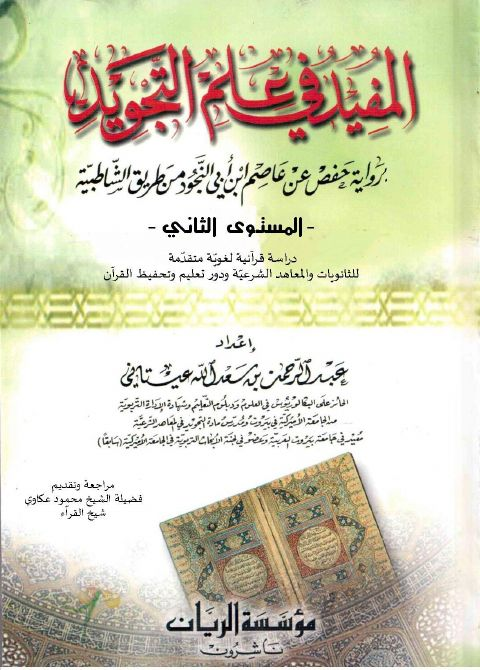

Downloads need an internet connection.
المفيد في علم التجويد برواية حفص عن عاصم بن أبي النجود من طريق الشاطبية
Authors: عبد الرحمن سعد الله العيتاني
Editors: محمود العكاوي
Publishers: مؤسسة الريان
**▫️ العنوان: المفيد في علم التجويد برواية حفص عن عاصم بن أبي النجود من طريق الشاطبية** ▪️ المؤلف: #عبد_الرحمن_سعد_الله_العيتاني ▫️ المحقق: #محمود_العكاوي ▪️ الناشر: #مؤسسة_الريان_ناشرون ▫️ تاريخ النشر: 2011م 1432هـ ▪️ بلد النشر: بيروت، #لبنان ▫️ الطبعة: 1 ▪️ عدد الأجزاء: 1 ▫️ الصفحات: 260 ▪️ نوع الوعاء: #كتاب ▫️ التصنيف الرئيسي: #التفسير_وعلوم_القرآن ۪